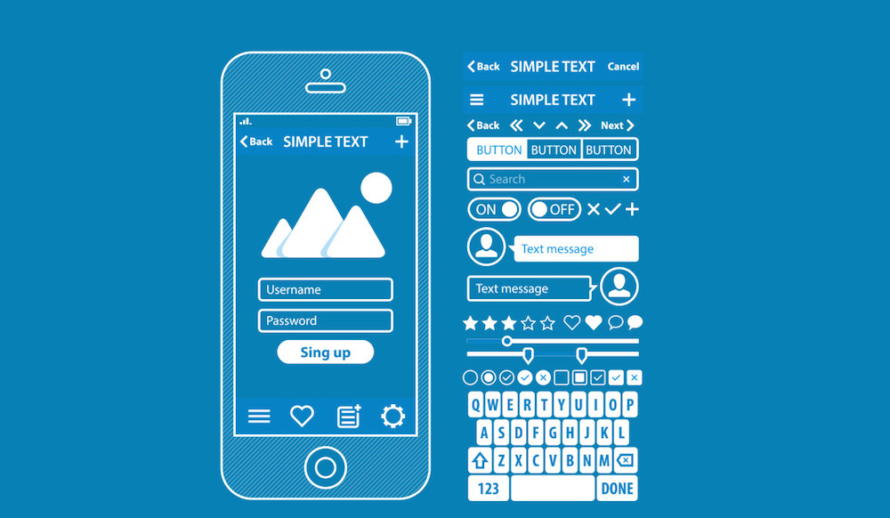

Sistemas operativos moviles
Un sistema operativo móvil o SO móvil es un sistema operativo que controla un dispositivo móvil al igual que los computadores utilizan Windows o Linux entre otros. Sin embargo, los sistemas operativos móviles son bastantes más simples y están más orientados a la conectividad inalámbrica, los formatos multimedia para móviles y las diferentes maneras de introducir información en ellos. No existían sistemas operativos antes del 2004 porque solo eran software con interface La mayoría de los sistemas operativos utilizados en la actualidad se basan en capas
⠀
La capa mas cononcida de un movi es la kernel o nucleo que proporciona el acceso a los distintos elementos del hardware (parte fisica)del dispositivo. Ofrece distintos servicios a las superiores como son los controladores para el hardware, la gestión de procesos, el sistema de archivos y el acceso y gestión de la memoria. Ademas se encarga de crear y destruir procesos, es decir, levantar software en memoria o eliminarlo⠀
⠀
El Middleware también llamado lógica de información entre aplicaciones Es el software que proporciona un enlace entre aplicaciones de software independientes. Middleware a veces se llama a la vía que conecta dos aplicaciones y pasa los datos entre ellas. Los middleware permiten que los datos contenidos en una base de datos puedan ser accedidos a través de otra, ahorrando tiempo a los programadores.⠀

⠀
El Entorno de ejecución de aplicaciones son consiste en un gestor de aplicaciones y un conjunto de interfaces programables abiertas y programables por parte de los desarrolladores para la creación de software.⠀
Y finalizar con la Interfaz de usuario que tienen como proposito facilitar la interacción con el usuario y el diseño de la presentación visual de la aplicación. Los servicios que incluye son el de componentes gráficos (botones, pantallas, listas, etc.) y el del marco de interacción.⠀
⠀
la variedad de dispositivos moviles es amplia, pero la mayoria solo conoce la existencia de las 2 mas famosas que son Android y IOS. Los siguientes nombres son alguno sistemas operativos que hay ademas de estos 2.⠀
*Windows Phone *BlackBerry OS *Symbian OS *Firefox *Ubuntu Touch⠀
Hay aun mas sistemas operativos moviles, pero no destacan tanto como estos.